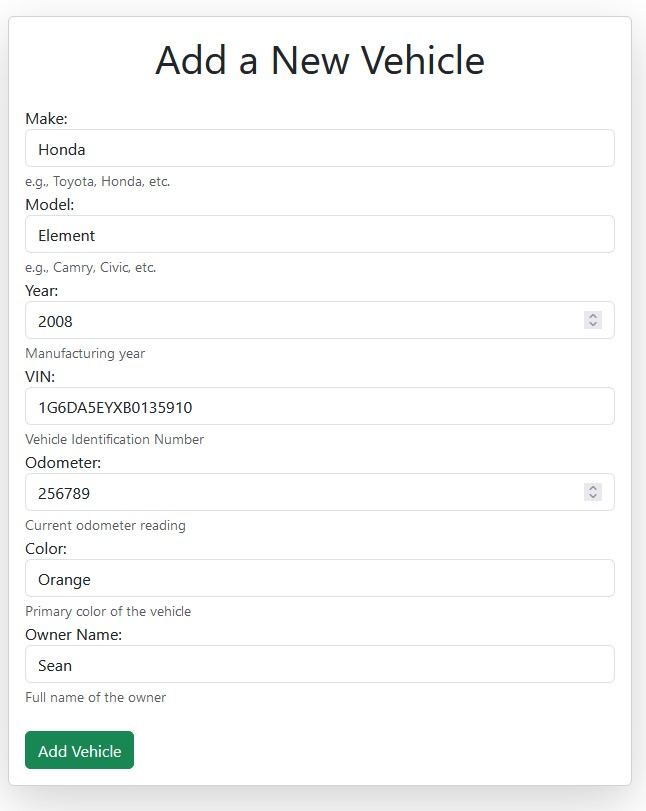

Retrospective: vehiclemanager
In this post I look back at my first public GitHub project:
Link to project
You can find a link to vehiclemanager here: GitHub Link
Before the project
In 2022, I was nearing the end of my second-to-last semester at MSU Denver. I had come to the realization that the curriculum for my program had not adequately prepared me for any job requiring coding skills. We had taken a Python course but the end result was a basic CRUD application that you interacted with in the command line. I was too far into the Computer Information Systems program to switch to Computer Science at this point so I needed to stick it out.
This program, vehiclemanager, stemmed from my recognition of the need for a tangible project on my GitHub profile, one that could demonstrate my proficiency in Python programming. Personally, if my business Python programming course wanted to better prepare us for work, we should have created a deployable CRUD application using FastAPI, Django, or Flask. A project that had some sort of basic business function.
Looking at the project
This project is a spin on a note-taking app. This allows a user to store information about their friends' vehicles. Originally, this started out as a FastAPI application in 2022 but I had revamped it to use Flask towards the end of 2023. Unlike the original FastAPI application, this one is deployable with a Docker container.
Cloning the repo
To deploy this project I scrolled down to the bottom of the readme to grab the instructions to deploy the project. It's been a hot moment since I’ve deployed this so I proceed to clone the project from the GitHub repo:
git clone https://github.com/Xata/vehiclemanager.git
Running the app
Following the instructions. We need to create a virtual environment:
cd vehiclemanager
python3 -m venv .venv
source venv/bin/activate
pip install -r requirements.txt
Then we run the program to take a look at things:
python3 main.py
App Demo
First off, I notice that this would not be production ready. While I realize that this is a student demo. I think it would have been better to make it more production ready. I had a handy note in the readme file:
⚠️ Do not deploy in production environment.
Upon running someone will be met with this message:
Note: I decided to mask the internal IP address. I know technically you don't need to but security by obscurity just makes people's lives a smidge harder.
When navigating to the default webpage I can see the login page:
However, the hamburger menu is broken if you have the webpage not completely expanded. In order to actually make an account you need to make the webpage full-screen to see the sign-up menu:
After creating an account we can add a vehicle or manage. However, the buttons on the landing page don't work. One needs to navigate to the navbar at the top and use the drop down menu to add a new vehicle:
Shoot, oh well. These the functionality of these buttons can be fixed later.
When we're finally in this menu we can see all the different options to add a vehicle to the database. Here we can add a new vehicle to the sqlite database: 
Once done. We can see the list of vehicles on the landing screen. This only displays the Year, Make, and Model. You can delete the vehicle from this page by clicking the trashcan icon. This button does work on the page:
Changes I would make now
The app is very simple. There are some pieces that do not work like the two buttons on the homepage that don't do anything. I remember feeling like I needed to rewrite everything to work with Flask instead of FastAPI. The FastAPI portion is still on the GitHub but it didn't work with Docker.
First change
One glaring thing I noticed is that the app is listening on 0.0.0.0. In main.py we are passing the following:
from app import create_app
app = create_app()
if __name__ == '__main__':
app.run(host='0.0.0.0', port=5000, debug=True)
This was done because I was in a rush to get the app working in a container in any capacity. I would now instead use an variable inside of a .env to pass through to the container so that the app listens on a specific IP address.
Second change
I need to fix the buttons on the main page. My first instinct upon firing up this app was to click the buttons that didn't do anything:
I need to fix these buttons so that they work.
Conclusion
Overall this is a very basic CRUD application that is missing some features. Regardless, I think this is a good start to something more interesting. I'm going to implement my changes to get it to a better place and go from there.
Thank you for reading!